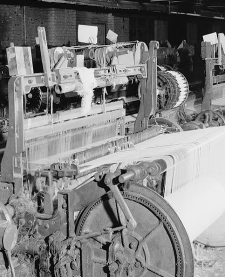
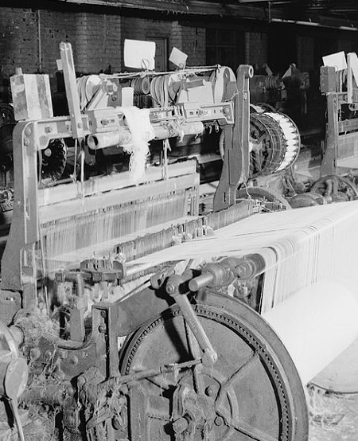

About Us

Founder

C.E.O
Manager
The textile hub of India, Bhiwandi is one of the largest fabrics and textile market in India. The textile market consisting of wholesalers, suppliers and the supply stores all over the city have everything for everyone. The textile job works and the special manmade fabric is manufactured in the manufacturing units of Bhiwandi. The textile market of Bhiwandi has export oriented approach and the maximum manufactured produce is shipped off to other neighboring states and in the overseas market as well. The market is fit for bulk purchase and the fabric manufactured is of superior quality which is used in production of denims, cotton apparels and garments and the artificial silk garments. The textile market of Bhiwandi is on revival stage and looks for further financial assistance which will augment development and new addition of retailers and wholesalers will be the part of the textile market of Bhiwandi.
 
